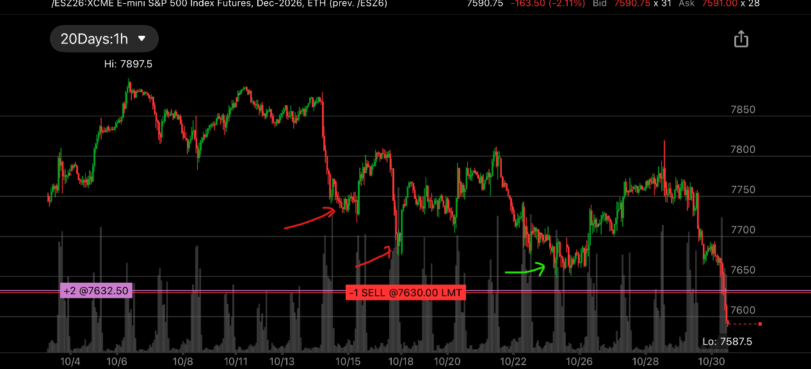
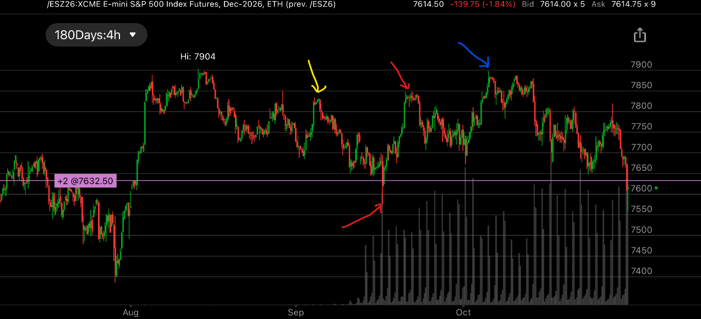
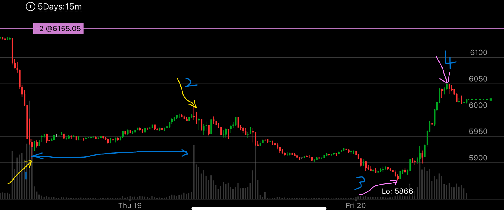
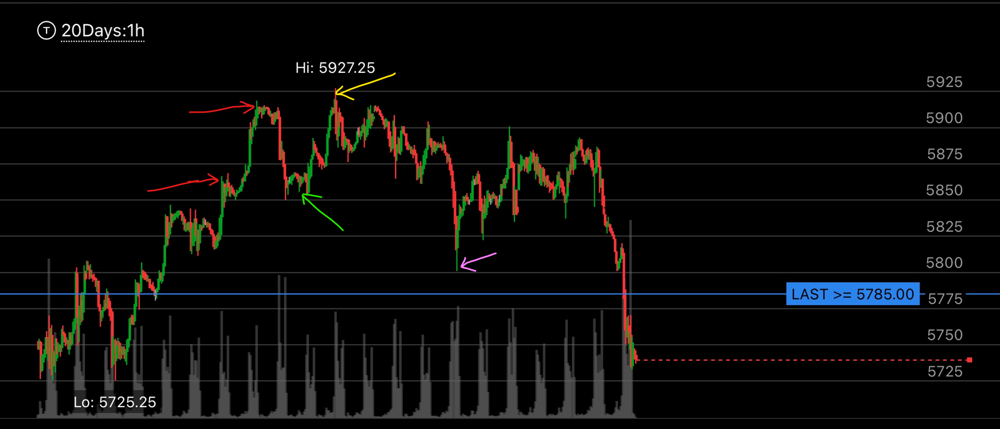

如何判断下跌中，它在底部停留很久还是很短时间
- 一种是很简单的，尖锐--抹平走势，就是第一次立刻反弹或者短时间反弹，第二次，低于前面的点，在低点徘徊很久才反弹。
- 一种是相对弱势，反其道而行之。 这样未来还会回来。因为它是相对强势。

图示:
- 两个红色箭头，就是一个反转的例子，第二个底部更低，但是它显然更强，在底部停留时间很短。和第一个相比。然后立刻反弹，反弹更高
- 第一个红色箭头在底部停留时间很久。
- 这样，未来它一定会低于第二个红色箭头的底部。
- 绿色箭头相对第二个红色箭头，在底部时间更久，说明要超过它的位置。它果然超过，但是立刻创新低，这是因为真的底部不在这里，在更低的地方。

图示:
- 这是一个长达180天的大型走势，说明一个走势可以持续很久。
- 看两个红色箭头和黄色箭头的位置，它低点更低，高点更高，而且在高点停留时间更久，而且两个黄色箭头速度比下跌速度更快。
- 这个比较反常的是，它居然继续上涨，在稍微下跌后，接近前面的高点。即使如此，它最后还是更加低于这个红色的低点，只是过了很久的时间。
- 即使接近前面的高点，它也没有创新高，而是下来了。说明接近高点不代表会创新高。

图示:
- 首先看两个黄色箭头，它的顶部持续时间很短，底部持续时间更短。但是关键是顶部。
- 看1~2 的时间以及2~3的时间，2~3 只是稍微长一点。说明这个下跌的力量不会很强。 会出现反弹
- 看3， 它先越过前面的低点，然后走平，然后创新低，这种就是典型的底部形态。
- 它从这个很短的顶部创了新低后（第一个紫色箭头），在底部出现更长时间的底部。这说明，它会反弹，而且这个底部不需要很久，只要稍微超过顶部时间就够了。
这时，应该在紫色的底部平仓空仓，然后反手做多。然后到了顶部再次做空，这样可以极大增加收益。
- 如果它在顶部时间很久，那么它在底部时间也会很久，才会出现真的底部。这时应该紧紧拿住空头，直到时间足够。

图示:
- 这个紫色箭头后，尖锐反弹，说明它未来一定会低于这个点
- 它反弹后，在上面震荡了5天，才下来，这样，它在下面也会停留很多天，才会反弹。 应该拿住空头，直到它稳定下来，再平仓，反手做多，甚至买call，加大收益
- 紫色箭头以后，它在上面震荡三天以上的时候，说明它在酝酿大跌，应该在它某次反弹幅度很大的时候，买put，加大收益